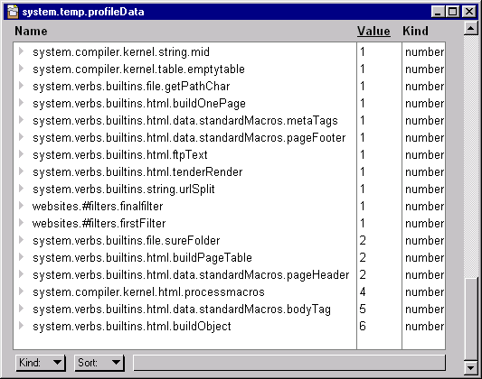

UserLand Frontier
Profiling
Profiling allows you to find out what scripts and kernel verbs are being executed and for how long. It's a way of finding performance bottlenecks.Looking at profile results
The results of a profile are stored in a table. Each cell name is the name of a script or kernel verb. The value associated with each name is the number of ticks Frontier spent executing that code.
Tip: the results are most meaningful if you sort by Value. Click on Value at the top of a table to change the sorting of the profile results table. That way the code that spent the most time executing will be at the bottom of the table; the code executed least will be at the top.
Two types of profiles
There are two types of profiles -- sliced and cumulative.
A sliced profile means that each object's time does not include time spent in other scripts that it calls. A cumulative profile means that it does include time spent in other scripts that it calls.
Starting a profile
The new verb script.startProfile starts a profile.
Call it like this:
script.startProfile (sliced)The "sliced" parameter is a boolean -- set it to true to run a sliced profile, false to run a cumulative profile.
Stopping a profile
To stop a profile use the script.stopProfile verb, like this:
script.stopProfile (adrTable)If adrTable is not nil, profile data is placed in a table at the adrTable address and is then reset. Otherwise, profiling is just stopped, but can be resumed.
Anonymous
You'll sometimes see an "anonymous" entry in your profile data. Anonymous code is a script that doesn't live in the odb or a menubar object.
Examples include:
s = "for i = 1 to 10 {msg (i)}"; evaluate (s)The code being evaluated is a string. The name of the object it came from, s, is not persistent. It has no meaning outside of the scope of that local variable.
s = workspace.myScript; s ()Again, the local script s only exists while the enclosing script is actually running. The code runs anonymously.
That's the bottom line: anonymous means that there is not a persistent, global name of the code that was running.
Sample code
Here's a sample that profiles building the web page stored at websites.samples.randomStuff:
new (tableType, @temp.profileData) script.startProfile (true) html.buildOnePage (@websites.samples.randomStuff) script.stopProfile (@temp.profileData) edit (@temp.profileData)The screen shot below shows part of the profile data in a table that results from this sample. As you can see the scripts that take the most time are html.buildObject, the bodyTag macro, and the kernel's process macros routine.

This is a Manila site.